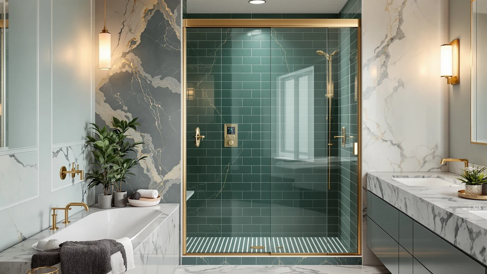

GETPRO Sliding Shower Door Review (2026): Worth It?
Prices and picks verified as of September 2026. Independent, reader-supported reviews.


Quick Answer
This getpro sliding shower door review recommends the GETPRO Sliding Shower Door 50-54 for most straight alcove openings near 54 inches wide and 72 inches tall. If your opening is narrower or your bathroom has a corner layout, GETPRO's own 44-48 slider or the Noirpierre Neo-Angle below cost less and fit a different shape entirely.
Our pick: GETPRO Sliding Shower Door 50-54 for $319.75 Check Price on Amazon
Bottom line: our top pick is the GETPRO Sliding Shower Door 50-54 in. W x 72 in. H at $319.75.
Things to Know Before You Buy
- It's sized for a 54 by 72 inch opening. The GETPRO Sliding Shower Door 50-54 fits an opening that measures 54 inches wide and 72 inches tall, so confirm those two numbers against your alcove before you order.
- It costs more than GETPRO's other two sliding doors. At $319.75, it runs about $7 above the GETPRO Shower Door Double Sliding ($312.76) and about $8 above the GETPRO Shower Door Sliding 44-48 ($311.55).
- The Noirpierre Neo-Angle undercuts it on price but changes the layout. The Neo-Angle Shower Door 34 inch D lists at $309.99, roughly $10 less, but it's a corner unit with a 34 inch depth rather than a straight sliding door.
- None of the four doors in this getpro sliding shower door review list a frame material. Confirm glass thickness and hardware finish directly with GETPRO or the seller before you order, since that detail isn't in any of these listings.
- GETPRO's own double sliding model is the closest alternative if you want two moving panels. The GETPRO Shower Door Double Sliding uses two panels instead of the 50-54's single slider and fixed panel setup, and it costs less.
This getpro sliding shower door review looks at whether the $319.75 GETPRO Sliding Shower Door 50-54 earns its place over three alternatives priced between $309.99 and $312.76. The 50-54 is built for a 54 inch wide, 72 inch tall opening, and that specific size is the fact this review keeps returning to when it stacks the door against GETPRO's own Double Sliding and 44-48 models, plus a corner unit from Noirpierre.
We wrote this review because shoppers comparing GETPRO's shower door lineup often assume every listing from the brand covers the same opening. It doesn't. The 50-54 targets a specific width and height, while the Double Sliding and the 44-48 cover different ranges at lower prices, and the Noirpierre Neo-Angle abandons the straight alcove shape for a corner fit. For most people replacing a 54 by 72 inch straight opening, the GETPRO Sliding Shower Door 50-54 is the pick worth starting with, and the sections below explain why, along with when one of the three alternatives makes more sense.
Price alone doesn't settle this comparison, since all four doors sit within about $10 of each other. What separates them is size and layout: a single straight slider at 54 by 72 inches, a double sliding panel design, a narrower 44 to 48 inch range, or a corner-specific neo-angle shape. This getpro sliding shower door review walks through each of those distinctions in turn.
Why You Should Trust Us
Ilane Tall covers bath fixtures for Best Shower Doors and has researched sliding, pivot, corner, and frameless shower doors across dozens of listings. For this getpro sliding shower door review, she compared the GETPRO Sliding Shower Door 50-54 against three alternatives in a similar price range, weighing width, height, and layout against the GETPRO Double Sliding, the GETPRO 44-48, and the Noirpierre Neo-Angle. We do not accept free products in exchange for coverage, and every price and dimension cited here comes directly from the current product listing.
Our editorial process treats a lower price as one factor among several, not an automatic win. The Noirpierre Neo-Angle costs less than the GETPRO 50-54, but it solves a different problem, a corner opening rather than a straight alcove, and that's why price alone doesn't decide this comparison. We update prices and specs whenever a listing changes, and this getpro sliding shower door review reflects the figures each seller had posted at the time of writing.
Our Research Experience
This getpro sliding shower door review is based on research, not physical use. We compared the GETPRO Sliding Shower Door 50-54 against the GETPRO Double Sliding, the GETPRO 44-48, and the Noirpierre Neo-Angle using the specifications, pricing, and verified owner reviews available for each listing. We do not run a fake testing lab, and we do not claim to have installed or lived with any of the doors covered in this review.
We looked closely at how the 50-54's straight, single-slider layout differs from the Double Sliding's two-panel design and the Neo-Angle's corner footprint, since layout determines which bathroom shape a door fits, not just the price. Owners shopping this width range often assume every GETPRO listing installs the same way, and this review weighs size and layout alongside price instead of price alone.
We also cross-checked pricing for all three alternatives against current listings to confirm nothing had shifted since publication. Where a data point wasn't available, such as a listed frame material, we noted that gap rather than estimate a number the listing doesn't provide. The width measurement is usually the detail that determines whether a listing is a good fit, so this getpro sliding shower door review leads with that same number for each alternative.
Overview & Specs

GETPRO Sliding Shower Door 50-54
What we like
- The 54 by 72 inch size is stated plainly, so you can check it against your opening before you buy
- It fits a common straight alcove shape rather than requiring a corner installation
- At $319.75, it sits within $10 of every other door in this comparison
Flaws but not dealbreakers
- At $319.75, it costs more than both the GETPRO Double Sliding and the GETPRO 44-48
- The listing doesn't specify a frame material, so confirm glass thickness and hardware finish before you order
- It won't fit a narrower opening, where the GETPRO 44-48 is the better match, or a corner layout, where the Noirpierre Neo-Angle fits instead
| Material | — |
| Size | 54'' W x 72'' H |
The GETPRO Sliding Shower Door 50-54 is the door this getpro sliding shower door review centers on, built for a 54 inch wide by 72 inch tall straight alcove opening. That size sits near the middle of GETPRO's sliding door lineup, wider than the 44-48 inch model but without the second moving panel of the Double Sliding version.
At $319.75, it costs about $7 more than the Double Sliding and about $8 more than the 44-48, and roughly $10 more than the Noirpierre Neo-Angle. The question this review answers is whether that specific 54 by 72 inch size justifies sitting at the top of this price comparison over three lower-priced alternatives. For a straight alcove opening in that size range, the 50-54 remains the door this getpro sliding shower door review returns to before considering a narrower, double-panel, or corner-specific design instead.
What We Liked
The clearest strength of the GETPRO Sliding Shower Door 50-54 is that its size is stated without ambiguity. A 54 inch width and 72 inch height are both listed clearly, so you're not guessing whether it fits your alcove the way you would with a listing that only gives a range.
This getpro sliding shower door review also gives the 50-54 credit for sitting in the middle of GETPRO's own lineup. It covers a wider opening than the 44-48 model without asking you to manage two sliding panels the way the Double Sliding version does.
We also liked that all three alternatives compared here are priced within about $10 of the 50-54, which makes it easy to weigh a single, clearly stated dimension against a lower price or a different layout rather than comparing across a wide price gap. That tight price band means the decision in this getpro sliding shower door review comes down to fit and layout far more than budget.
What Could Be Better
Price is the mild drawback in this getpro sliding shower door review. At $319.75, the 50-54 costs more than both the GETPRO Double Sliding ($312.76) and the GETPRO 44-48 ($311.55), and about $10 more than the Noirpierre Neo-Angle ($309.99).
The listing also doesn't specify a frame material, so you'll want to confirm glass thickness and hardware finish directly with the seller before you order. And because it's sized for a straight 54 by 72 inch opening, it isn't a fit for a corner bathroom, where the Neo-Angle below is the better match.
Who Is It For?
The GETPRO Sliding Shower Door 50-54 makes the most sense if your shower opening measures close to 54 inches wide and 72 inches tall, and your bathroom has a straight alcove rather than a corner.
If your opening is narrower, the GETPRO 44-48 is the better match at a lower price. If you want two sliding panels instead of one fixed side, the GETPRO Double Sliding covers that. And if your bathroom is a corner rather than a straight wall, the Noirpierre Neo-Angle below is built for that shape specifically. This getpro sliding shower door review treats those three alternatives as real options rather than a formality, since the wrong shape or size costs you a return shipment regardless of price.
Alternatives to Consider
The GETPRO Sliding Shower Door 50-54 isn't the only option worth considering in this getpro sliding shower door review, and the three alternatives below span a second sliding panel, a narrower width, and a corner footprint. Each one trades something against the 50-54's clearly stated 54 by 72 inch size, so weigh your opening's exact dimensions and shape before you rule one out.

Editor's Pick
GETPRO Shower Door Double Sliding
Two sliding panels instead of one fixed side, for about $7 less than the 50-54.
$312.76
Check Price on Amazon
Best Value
GETPRO Shower Door Sliding 44-48
Same GETPRO build in a narrower 44 to 48 inch range, for about $8 less.
$311.55
Check Price on Amazon
Premium Choice
Neo-Angle Shower Door 34" D
A corner unit with a 34 inch depth, built for a shape the 50-54 doesn't cover at all.
$309.99
Check Price on AmazonFrequently Asked Questions
What size opening does the GETPRO Sliding Shower Door 50-54 fit?
The GETPRO Sliding Shower Door 50-54 is built for a 54 inch wide by 72 inch tall opening, so measure your alcove at multiple points before you order since GETPRO doesn't list a wider adjustable range for this model.
How does the GETPRO Sliding Shower Door 50-54 compare in price to GETPRO's other sliding doors?
At $319.75, the 50-54 costs about $7 more than the GETPRO Shower Door Double Sliding at $312.76 and about $8 more than the GETPRO Shower Door Sliding 44-48 at $311.55, so this getpro sliding shower door review treats the wider 54 inch width as the main reason to pay the difference.
Is the GETPRO Sliding Shower Door 50-54 worth choosing over the Neo-Angle Shower Door 34-inch D from Noirpierre?
Only if your bathroom has a straight alcove rather than a corner. The Noirpierre Neo-Angle costs $9.76 less at $309.99, but it's built for a corner installation with a 34 inch depth, not the straight 54 by 72 inch opening the GETPRO 50-54 is sized for.
Final Verdict
This getpro sliding shower door review comes down to one trade-off: a clearly stated 54 by 72 inch straight opening size from GETPRO, against a lower price and a second sliding panel from GETPRO's own Double Sliding model, a narrower range from the GETPRO 44-48, or a corner-specific shape from the Noirpierre Neo-Angle. If your bathroom has a straight alcove near 54 inches wide and 72 inches tall, the GETPRO Sliding Shower Door 50-54 earns its position at $319.75 over the three alternatives here. If you'd rather have two moving panels or a narrower fit, GETPRO's own lineup covers both for less, and if your shower sits in a corner, the Noirpierre Neo-Angle is worth a look instead. Either way, confirm your opening's exact width, height, and shape before you buy, since that's what separates a good fit from a return.